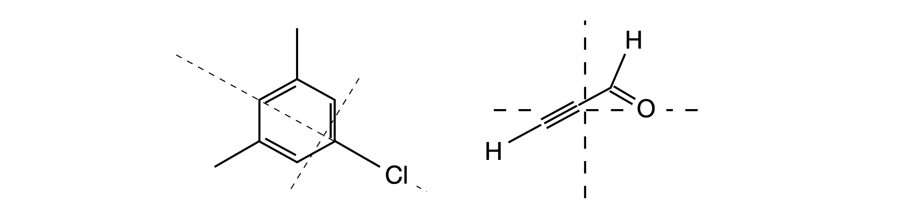
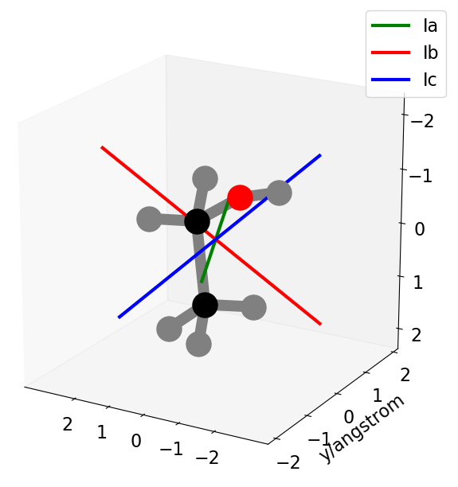

16 Principal axes and Moments of Inertia
Contents
16 Principal axes and Moments of Inertia#
# import all python add-ons etc that will be needed later on
%matplotlib inline
import numpy as np
import matplotlib.pyplot as plt
from numpy import linalg as LA
plt.rcParams.update({'font.size': 16}) # set font size for plots
16 Introduction#
We can cause any mass, such as a ball or spanner, to spin in any direction whatsoever with respect to itself; spin up, spin down, left, right, or any combination. If we calculate the moment of inertia about each of the axes the mass is spinning, we find that it is always possible to represent the motion and moments as a linear combination of three principal axes, which are intrinsic to the body and are defined by the shape and mass of the body itself. It is not so surprising that we can find a unique set of axes because we know that we can decompose any vector into its basis vectors, for example along the \(x-, y-\), or \(z\)-axes for the unit vectors \(i, j, k\). When decomposing the motion or moments of inertia, if each does not contain components from any of the others, then the axes must be orthogonal and they are the principal axes.
The principal axes about which the body will rotate, are shown in Figure 71; the moment of inertia about axis A will be relatively small, as the girder is long and thin. The moments of inertia about B and C, will be larger than about axis A, but approximately equal to one another because of symmetry. The same arguments apply to a molecule.
Figure 71. Principal rotation axes about which moments of inertia are calculated.
It is clear from Figure 71 how to choose the principal axes for the girder, but for an oddly shaped body, which means in practice most molecules this is hard to decide per se. If we were to choose another set of axes at some angle to those shown on the girder, then the moments of inertia would contain terms with contributions from the principal axes to a lesser or greater extent, depending on exactly how these other axes are placed with respect to the body. This would be rather awkward because everyone would have calculated different values for the same body, depending on exactly where the axes are chosen to be. By calculating the principal axes, which are unique to the body considered because angular momentum points in a fixed direction for a given rotational motion, then this ambiguity is removed.
Molecules have discrete masses and Fig. 72 shows the approximate location of the centre of mass of the chloro-mesiylene and propynal molecules together with two of the principal rotation axes; the third is \(90^\mathrm{o}\) to these two and out of the page. In the vapour phase, the molecule rotates about its centre of mass (or gravity) and this may not be situated on an atom. Most of our calculations are aimed at finding these principal axes because molecular properties can be referenced to these. Principal axes are used in different ways by different authors, but only in the sense that \(x, y,\) and \(z\) labels become interchanged, therefore, a convention is adopted to label axes with the largest moment of inertia as the axis C and the smallest as A.
In Figure 72 the moment about the axis through the chlorine atom will be small as this heavy atom is on the axis and for this atom, and the other two carbon atoms on the axis the product \(mr^2\) is zero. Rotation about the other two axes will be larger but different to one another.
In calculating the moment of inertia, we are not interested in the exact formula for a particular molecule, which is often very complicated and of no intrinsic interest. We are interested, however, in the numerical values of the moment of inertia and their directions with respect to the molecule, because we ultimately want to calculate bond lengths. A very elegant eigenvalue - eigenvector matrix method can automatically find the principal axes and the moments of inertia of very complex molecules. The algorithm with which to do this is shown below. The eigenvalues produced are the moments of inertia; the eigenvectors are used to produce the principal or inertial axes; eigenvectors always produce geometry! The method is described next; equation (75) is the one we will use.

Figure 72. Approximate location of the centre of mass together with two of the principal rotation axes. The third, describing rotational motion in the plane of the figure, is perpendicular to the other axes and points out of the plane of the figure. The molecule rotates about the centre of mass or gravity. This need not be situated on an atom.
16.1 Formal description of the method#
If all the atoms are rigidly connected together, the \(k^{th}\) atom and its velocity vector \(\pmb{v}_k\), are related to the angular velocity of the molecule \(\pmb{\omega}\) about the centre of mass as
where \(\pmb{r}_k\) is the position vector from the centre of mass and \(\pmb{\omega}\) is a vector but does not carry an index. This is because in a rigid body, all atoms move with the same angular velocity. The angular momentum for the \(k^{th}\) atom is defined as the vector cross product
where \(\pmb{p} = m\pmb{v}\) is the momentum vector and the total angular momentum is the sum over all \(n\) atoms and is
where we have substituted for \(p\) and then \(v\). The cross product of a cross product is called a triple product (see Chapter 6.18) and is a vector;
The two dot products each produce a number, and these multiply the vectors \(\pmb{b}\) and \(\pmb{c}\). We can now write, remembering that \(\pmb{r}_k\) is a vector,
The vector \(\pmb{J}\) has components \(x, y, z\) so it represents three equations. This can be written as a matrix equation but note that \(r_k^2\) is a number; it is the perpendicular distance of atom \(k\) from an axis, \(x, y\) or \(z\), but \(\pmb{r}_k\) is the vector \(\pmb{r}_k = (x_k\, y_k\, z_k)\) describing the position of atom \(k\).
The \(x\) component for the \(k^{th}\) atom is found by expanding the dot product as \(x_k\omega_x + y_k\omega_y + z_k\omega_z\) and then multiplying by \(x_km_k\) and rearranging a little
and there are similar equations for the \(y\) and \(z\) direction components.
By comparing coefficients of \(\omega_x, \omega_y\), and \(\omega_z\) in equations 74 and 75, the diagonal terms in this matrix are
For each atom \(r^2=x^2+y^2+z^2\) then these terms become
and similarly for the other diagonal terms. These terms are called moments of inertia coefficients and cannot be negative as they are the sum of squared terms. The cross terms \(I_{xy}\), for example, are called products of inertia coefficients, and are
Equation 74 can be rewritten for each atom \(k\) using the inertial coefficients
and, of the nine coefficients, only six are different because of symmetry; \(I_{xy} = I_{yx}\) and so forth. In matrix form these equations are
The matrix \(\pmb{I}\), is also sometimes either called the moment of inertia dyadic or the inertia tensor, but, more importantly, it is symmetrical and Hermitian so has real eigenvalues and orthogonal eigenvectors.
The next step in the calculation is to perform a principal axis transform, which we can view as a rotation of the inertia matrix to remove all the off-diagonal terms that become zero on forming a diagonal matrix. The methods of matrix algebra enable us to find for any molecule, or any body in general, the set of Cartesian axes for which the inertia \(\pmb{I}\) matrix will be diagonal. The result of this transformation is to produce moments of inertia about the principal axes.
The eigenvalues \(\lambda\), are found for each atom \(k\), using the secular determinant
The expressions for the diagonal and off-diagonal terms are given above. Because the moments of inertia coefficients contain squared terms we can pictorially view then as an ellipse. The rotation to principal axes is then akin to rotating the ellipse, as shown in Figure 66.
Finally, the kinetic energy relative to the centre of mass is also calculated in a straightforward way in matrix form and is
An example is easier to understand than this complex theory; the moments of inertia of ethanol will now be calculated. The X-ray coordinates give the atoms’ coordinates and Python/Sympy is used to do the algebra. The rotational constants are then easily calculated and compared with experimental values, which are \(A = 1.18, B = 0.318, C = 0.277 \,\mathrm{cm^{-1}}\) (Senent et al. 2000).
This problem is transferable to any molecule, although inputting data will be tedious for large molecules; only the coordinates C1, Ox, etc. will need to be changed and the order of array ‘molec’ and the mass. The numerical diagonalization will normally produce complex numbers as the eigenvalues and eigenvectors. As the determinant is Hermitian, the eigenvalues must be real, and any complex part should be small because it is caused by the method used to numerically solve of the equations, and should be made zero.
Note that distances are in angstroms, and the masses of the common isotopes, \(^{16}\)O and \(^{12}\)C are in atomic mass units, therefore, we take the mass to be 16 and 12 respectively. The units of the moment of inertia can be changed to kg m\(^2\) units at the end of the calculation. Note that the coordinates are each adjusted to the centre of mass before the calculation of the moments of inertia begins. The centre of mass is labelled ‘com’.
The order of the atoms is the same as for their coordinates
16.2 Calculating a molecule’s moments of inertia:#
# data is for ethanol
# atoms contains sequence of atoms to go with coords in order
# coords are x,y z positions in Angstrom
# mass is a dict with values in amu.
atoms=['C', 'O', 'H', 'C', 'H', 'H', 'H', 'H', 'H'] # atom type
coords=[[ -0.968, -0.008, -0.167],
[ -0.953, 1.395, -0.142],
[ 0.094, -0.344, -0.2],
[ -1.683, -0.523, 1.084],
[ -1.49, -0.319, -1.102],
[ -1.842, 1.688, -0.25],
[ -1.698, -1.638, 1.101],
[ -1.171, -0.174, 2.011],
[ -2.738, -0.167, 1.117]] # coordinates as x,y,z
#-------------------------------------
def mom_of_I(xyz,atm):
hbar = 1.054e-34 # J s
c = 2.9979e10 # cm / s
amu = 1.6605e-27 # kg
kB = 1.38065e-23 # J / K
angst= 1e-10
consts = hbar/(4*np.pi*amu*angst**2*c)
mass = {'H':1, 'C':12, 'N':14,'O':16, 'F':18,'Na':23, 'Mg':24.3, 'P':31,'S':32,
'Cl':35.5,'Ca':40,'Mn':55,'Fe':55.8,'C0':59,'Ni':58.7,'Cu':63.5,'Zn':65.4}
tmass = 0
n = len(atm)
for i in range(n):
tmass = tmass + mass[atm[i]] # total mass
com = [0.0 for i in range(3)]
ss = np.zeros((n,3),dtype=float ) #2D array n atoms, 3 -> x,y,z
for i in range(n):
ss[i][0]= xyz[i][0]*mass[atm[i]] # mass weighted coords
ss[i][1]= xyz[i][1]*mass[atm[i]]
ss[i][2]= xyz[i][2]*mass[atm[i]]
com = np.sum(ss,0)/tmass # centre of mass
print('{:s} {:10.5g} {:10.5g} {:10.5g}'.format( 'cente of mass', com[0],com[1],com[2]) )
ss = xyz - com
#print('CoM based coordinates \n',ss )
r = [0.0 for i in range(n)] # radial distance from com
for i in range(n):
r[i]= np.sqrt( (xyz[i][0] -com[0])**2 + (xyz[i][1] - com[1])**2 + (xyz[i][2] - com[2])**2)
Ixx= np.sum( [mass[atm[i]] *(r[i]**2 - (ss[i][0])**2 ) for i in range(n)] ) # Ixx, Ixy etc
Iyy= np.sum( [mass[atm[i]] *(r[i]**2 - (ss[i][1])**2 ) for i in range(n)] )
Izz= np.sum( [mass[atm[i]] *(r[i]**2 - (ss[i][2])**2 ) for i in range(n)] )
Ixy= np.sum( [-mass[atm[i]] * ss[i][0]*ss[i][1] for i in range(n)] )
Ixz= np.sum( [-mass[atm[i]] * ss[i][0]*ss[i][2] for i in range(n)] )
Iyz= np.sum( [-mass[atm[i]] * ss[i][1]*ss[i][2] for i in range(n)] )
M= [[Ixx,Ixy,Ixz],[Ixy,Iyy,Iyz],[Ixz,Iyz,Izz]] # moment of inertia matrix
eigvals = LA.eigh(M)
print('\n Eigenvalues\n', eigvals[0]) # print results
print('\n Moments of Inertia kg.m^2', eigvals[0]*amu*angst**2)
adet = LA.det(M)
print('{:s} {:10.5g}\n {:s} {:10.5g}{:s} '
.format( ' determinant kg^3 m^6', adet*(amu*angst**2)**3,
'High temperature rotation partition function',
np.sqrt( np.pi*adet*(amu*angst**2)**3 )*(2*kB/hbar**2)**(3.0/2.0),' * T^(3/2)/sym') )
print( '\n Eigvectors\n', eigvals[1] )
print('\n{:s} {:10.5f} {:10.5f} {:10.5f}'
.format( 'Rotational constants A, B, C /cm^{-1}',
consts/eigvals[0][0], consts/eigvals[0][1], consts/eigvals[0][2] ) )
print('radius of gyration /m', np.sqrt(eigvals[0]*amu*angst**2/(tmass*amu) ) )
return eigvals,ss
#-----------------------------
eigvals,ss = mom_of_I(coords,atoms) # do calculation
cente of mass -1.2153 0.32596 0.24802
Eigenvalues
[15.31632914 52.87227246 60.38671239]
Moments of Inertia kg.m^2 [2.54327645e-46 8.77944084e-46 1.00272136e-45]
determinant kg^3 m^6 2.2389e-136
High temperature rotation partition function 3.2866 * T^(3/2)/sym
Eigvectors
[[ 0.28934619 -0.44995832 -0.8448765 ]
[ 0.79846164 0.60026765 -0.04623586]
[-0.52795624 0.6612233 -0.53295961]]
Rotational constants A, B, C /cm^{-1} 1.10007 0.31867 0.27902
radius of gyration /m [5.77030049e-11 1.07209945e-10 1.14575504e-10]

Figure 73 X-ray structure of ethanol and its new inertial axes drawn to scale with respect to one another using the eigenvalues. The lengths are in units of amu A\(^2\) or \(1.667 \cdot 10^{-47}\,\mathrm{ kg\,m^2}, I_a = 15.2, I_b = 52.9, I_c = 60.4\). The H atoms are in grey the oxygen in red.
Note that these results should be rounded to four figures, as this is the precision of the data. The rotational constants compare well with experimentally measured values which are, \(A = 1.18, B = 0.318, C = 0.277\,\mathrm{ cm^{-1}}\). The inertial axes can now be drawn on top of the molecular structure. By convention, \(Ic\) labels the largest moment of inertia and \(Ia\) the smallest. Note that the units we use are in atomic mass units \(\times\) angstrom squared, which are equivalent to \(1.667 \cdot 10^{47}\,\mathrm{ kg\,m^2}\).
As might have been anticipated, the centre of mass is between the heavier atoms and is almost in the plane of these atoms. The smallest moment of inertia is about an axis in the plane of the OCC atoms and it points in the OC direction as shown approximately along the ‘line’ of the CCO atoms. The two largest moments of inertia, which are similar in value, describe motion perpendicular to this axis and are larger because the atoms are further from the axes. The new inertial axes, which are parallel to the moments of inertia, are drawn in proportion to the size of each eigenvector component from the initial molecular \(x, y\), and \(z\)-axes; the \(Ia\) axis has \(x, y, z\) components of approximately \(0.29, 0.8, -0.53\) as shown in the modal matrix of eigenvectors.